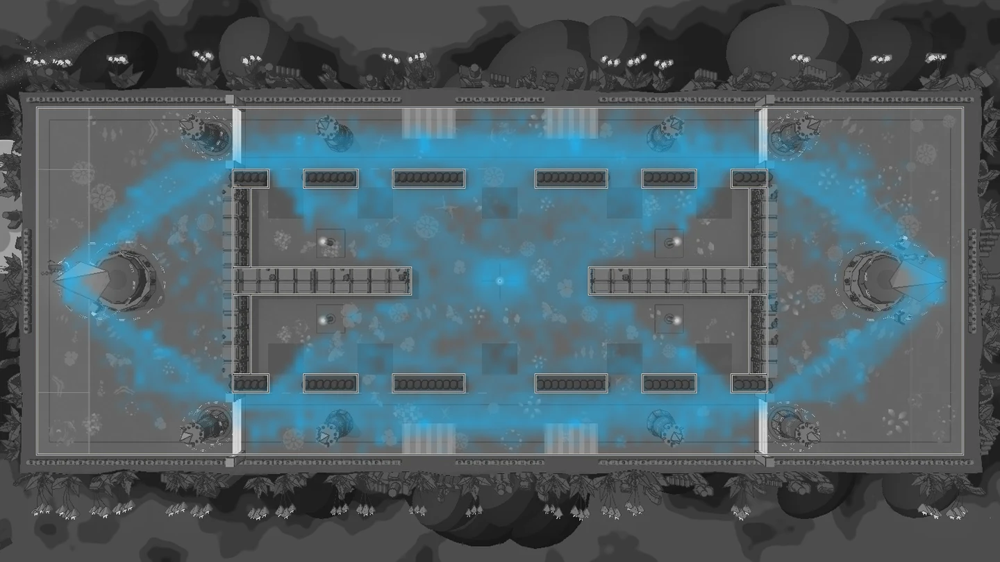
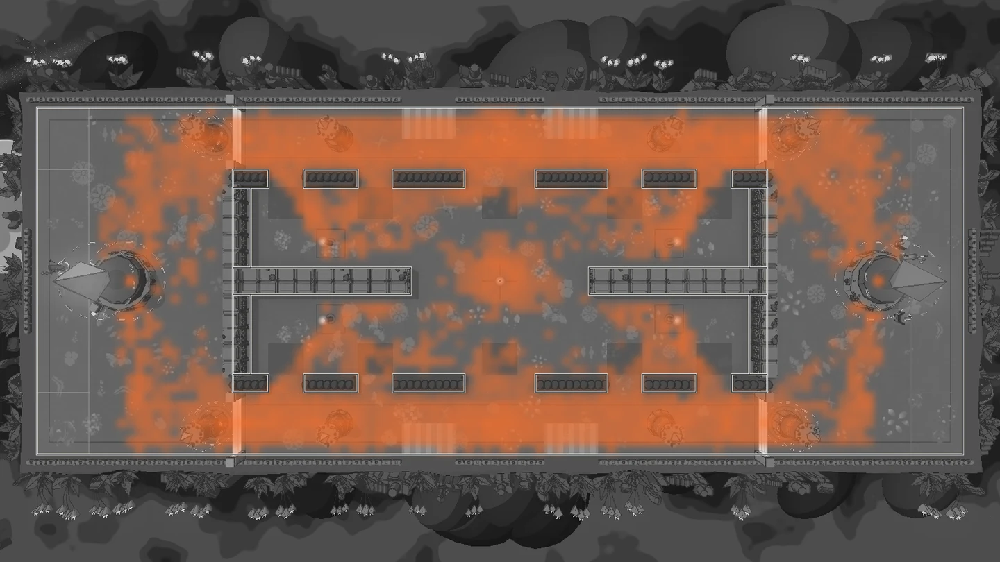
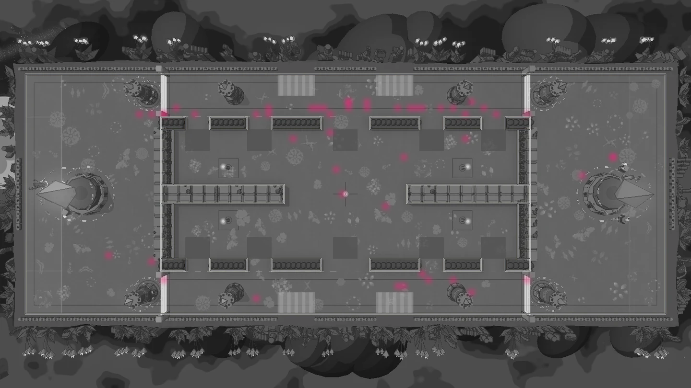

Flagfall heat maps
12 matches · 4,555 simulated seconds · 380 seconds per match · 0 timeouts.
Six hard bots, with Kappa, Ibis and a seeded random hero on each team. Seeds 2–13. The court is counted in 1 m squares; each colour grows stronger from zero to its own busiest square on a logarithmic scale. A soft blur joins neighbouring squares. Open an image to inspect the ground.
Presence

Fights

Deaths

1,619 of 3,720 open squares (43.5%) had no living hero sample. Walls and pillars are outlined at their ground footprints; raised stone in the photograph spreads beyond these outlines. The image top is −z, with team A at the left.
0 events or samples lacked an in-bounds position and were omitted. These are bot routes, not a verdict on human play.